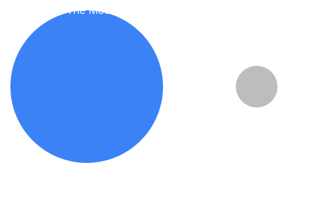

Moon Facts
- Diameter: 3,474 km, about a quarter of Earth's.
- Average distance from Earth: 384,400 km.
- One orbit around Earth takes 27.3 days.
- Gravity is only 16.5% of Earth's.
- Temperatures swing from about -173 °C to 127 °C.
- It is tidally locked, so we always see the same side.
- Apollo 11 landed the first humans here in 1969.
Moon Phase Viewer
Pick a phase and watch the Moon above change.
Full Moon
How Big Is It?
